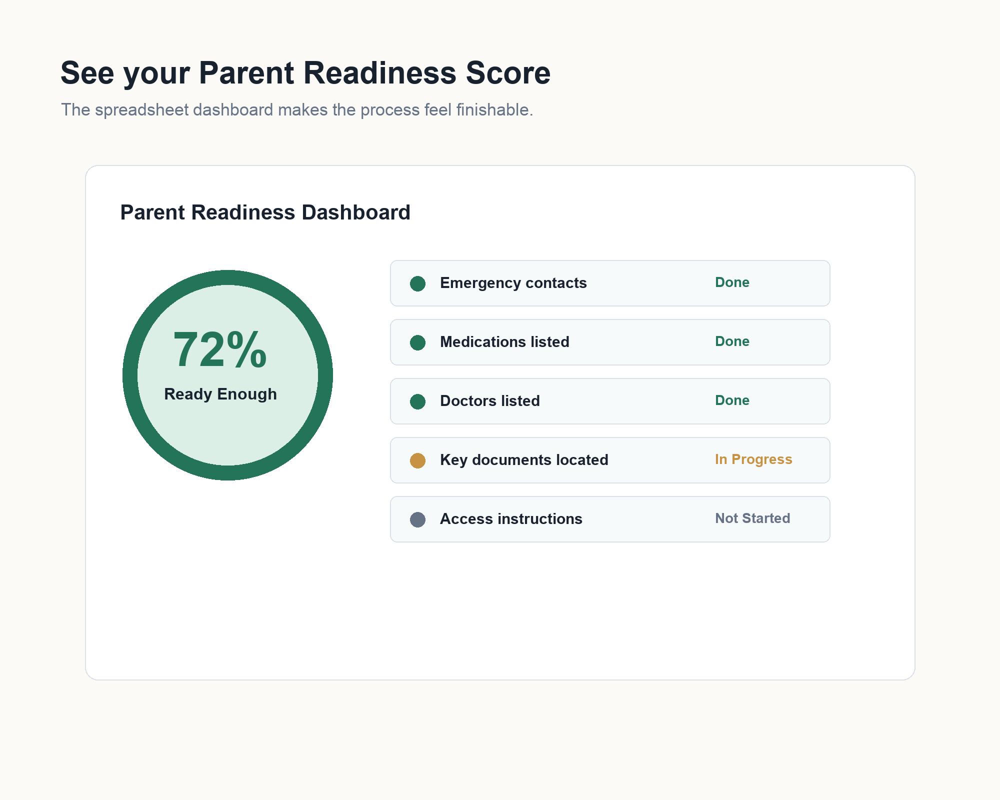
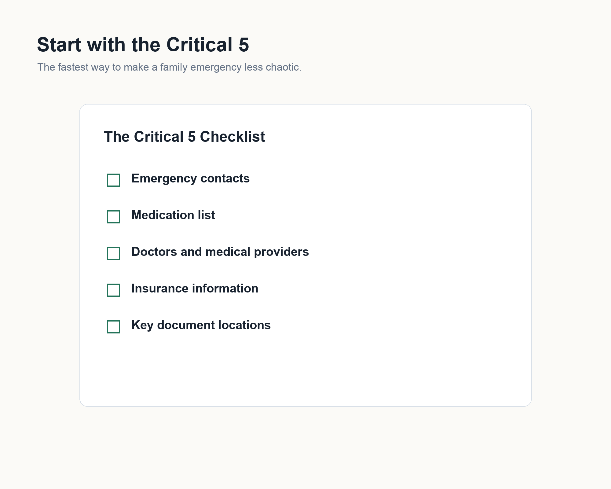

You know there are gaps.
Your parent has doctors, medications, insurance cards, bills, and documents, but no single place where the family can find the essentials.
The Life Handoff Kit
Be ready before your parent needs you, not after.
Get the most important medical, insurance, contact, and document details 80% organized in one focused hour, before everyone is rushed, stressed, or guessing.
Designed to be completed in one focused hour.
For organization only. Not legal or medical advice. Your family data stays with you.
Ready Enough
“Can we write down the basics so I know what to do if something happens?”
What this prevents
And that usually happens in a hospital.
You are in the waiting room.
The conversation
Most families have. The kit gives you a calm way to start with the details that matter first, without turning one afternoon into a heavy planning meeting.
So you are not guessing in an emergency.
So you know what is missing instantly.
So you can actually start the conversation.
Who this is for
You are already the one people turn to. This just makes sure you are ready when they do.
Your parent has doctors, medications, insurance cards, bills, and documents, but no single place where the family can find the essentials.
You want to ask practical questions without turning one afternoon into a scary estate-planning talk.
Not perfection. Not a 100-page binder. Just a clear first pass your family can improve over time.
The problem
A hospital visit can turn simple questions into a scramble: What medications does Dad take? Who is the primary doctor? Where is the insurance card? Which bills need to be handled while Mom recovers?
Parent Readiness Protocol turns those loose details into a finishable first pass. Not a giant binder. Not a homework project. Just the information your family needs to find first.
Inside the kit
The launch kit is intentionally focused so a real person can open it, make progress, and feel clearer the same day. Designed to be finished in one sitting, not saved for later.
Contacts, doctors, medications, insurance, document locations, bills, access strategy, who to call first, and a quarterly check-in.
A simple Google Sheets dashboard with a color-coded readiness score and the next three actions.
Calm language for asking a parent about medical information, documents, accounts, and emergency access.
Name, relationship, phone, backup contact
Insurance card, medications, ID, current doctor list
Documents, safe, folder, shared drive, trusted person
Close-up
The kit starts with the details families are usually asked for first, then moves into the dashboard, scripts, and check-in flow.
Why it is different
No overwhelming categories, vague prompts, or broad worksheets that leave you to decide what matters first.
No 100-page commitment. Start with the emergency details your family is most likely to need first.
One focused emergency system with the Critical 5, readiness score, and scripts in the same flow.

Dashboard
The dashboard keeps the work visible and simple. It shows the Critical 5, the family readiness percentage, the risk level, and the next few actions to finish.
Example: if contacts, medications, and insurance are done, but documents are not, you will see about 60% ready and exactly what to finish next.
First hour
Designed so you actually start and finish the important parts. The free Parent Emergency Snapshot and the full protocol both begin with the same idea: capture the essential details first, then improve the system later.
Start with the free checklist
Privacy
Your data never touches our servers. You fill, store, and control the files yourself.
The kit is delivered as blank files. There is no account where you upload private family information.
The access section is for documenting where credentials are stored, not for writing actual passwords into the document.
Keep it in your Google Drive, print it, place it in a safe, or share the location with one trusted person.
Free download
The exact information most families are asked for first if a parent is hospitalized tomorrow. Start with one page. It takes 10 minutes.
Launch offer
The complete launch kit includes the printable protocol, the Google Sheets readiness dashboard, and conversation scripts for getting the hard details without making it feel hard.
Instant download after purchase. Delivered instantly. Yours to keep. No account required.
Questions
No. The product is delivered as blank files. Anything you enter stays in your personal Google Drive, printed copy, or chosen storage method.
No. Use the access section only to document where passwords are securely stored and who has emergency access.
No. It is an organizational tool and does not replace a will, power of attorney, advance directive, doctor, attorney, or financial advisor.